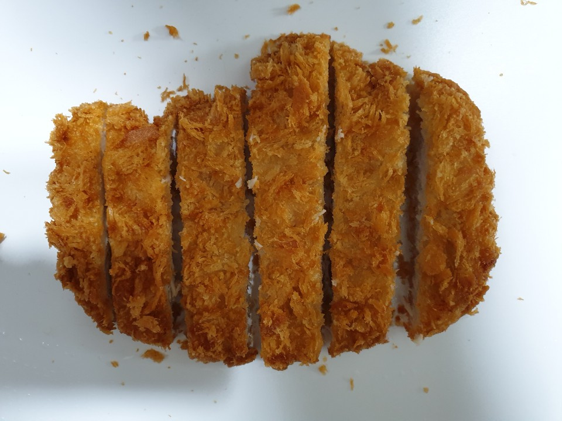
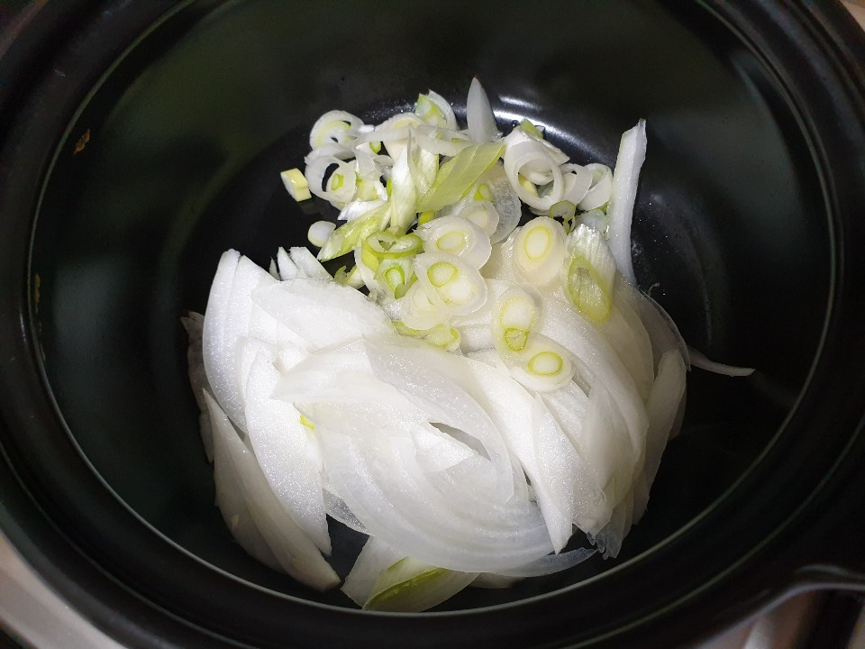
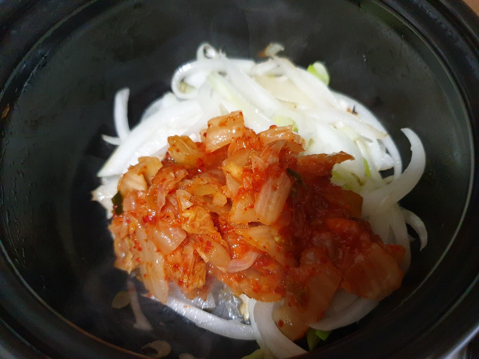
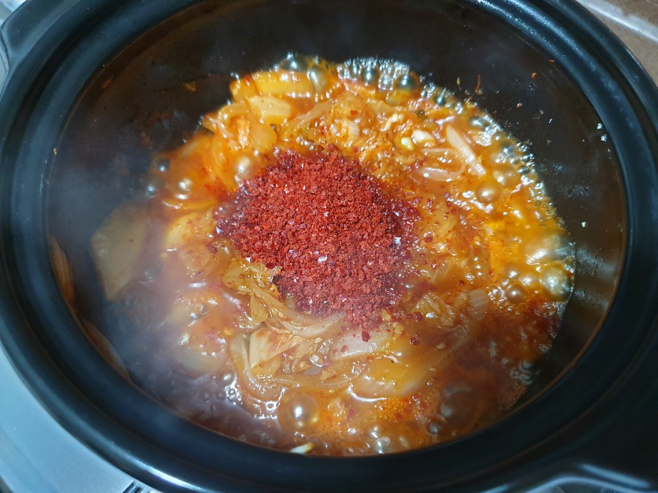
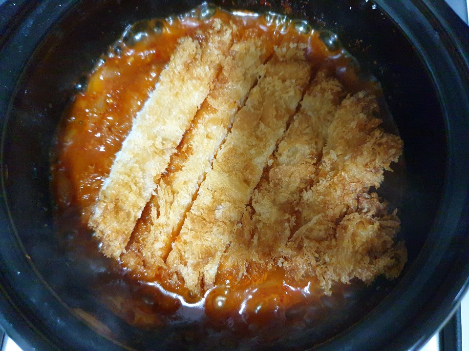
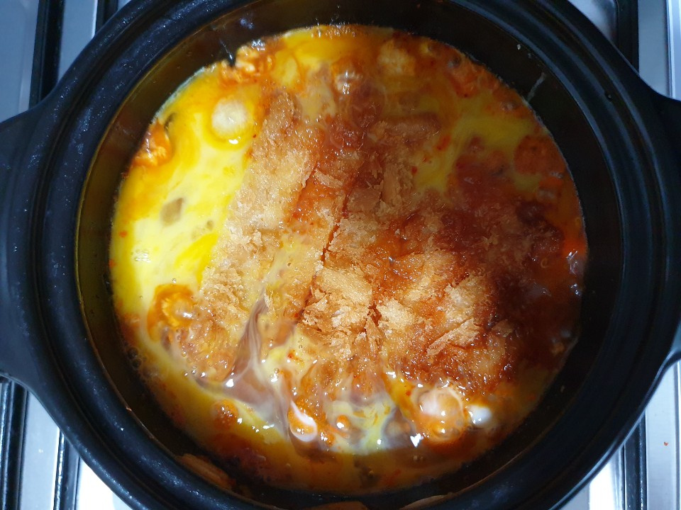

돈까스김치나베
누구나 즐겨 먹는 돈까스 점심 단골 메뉴이자 혼밥하기 딱 좋은 메뉴 간단 든든 한끼식사 돈까스김치나베
조리시간 : 20분 이내
재료
돈까스 1장
김치 1컵
김치국물 1/2컵
고춧가루 1스푼
다진마늘 1/2스푼
국간장 1.5~2스푼
설탕 1~1.5스푼
맛술 1스푼
달걀 1~2개
물 1/2컵
조리 순서
| 1. 돈까스 한장을 튀겨서 먹기 좋은 크기로 잘라주세요. |  |
| 2. 뚝배기에 기름을 두르고 대파, 양파를 볶아주세요. |  |
| 3. 김치를 넣고 볶다가 김치국물 종이컵으로 반컵정도 부어주세요. |  |
| 4. 어느정도 볶아졌으면 고춧가루 1스푼, 다진마늘 반스푼, 국간장 2스푼, 설탕 한스푼 반, 종이컵으로 물 반컵을 넣고 끓여주세요. |  |
| 5. 국물이 자작자작해지면 돈까스를 올려주세요. |  |
| 6. 달걀 1~2개를 풀어 가장자리에 빙빙 둘러주세요. 데코로 대파 올리면 든든한 한끼식사 완성! |  |